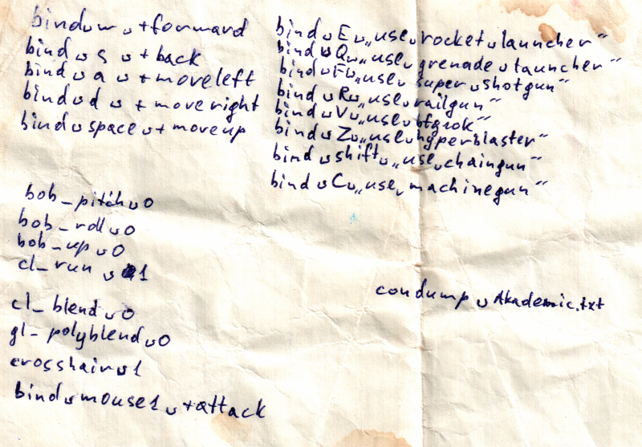
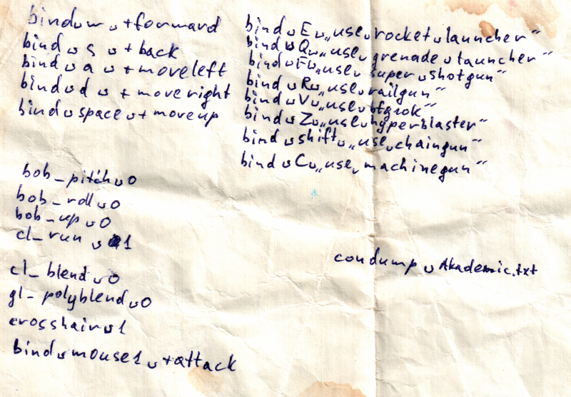

Находка
Разбирали старые вещи, нашли в куртке листок:  Это мой конфиг для Quake2. С ним я ходил в компьютерные клубы.
Разрешение в консоли debian Wacom InklingРазбирали старые вещи, нашли в куртке листок:  Это мой конфиг для Quake2. С ним я ходил в компьютерные клубы.
Разрешение в консоли debian Wacom Inkling